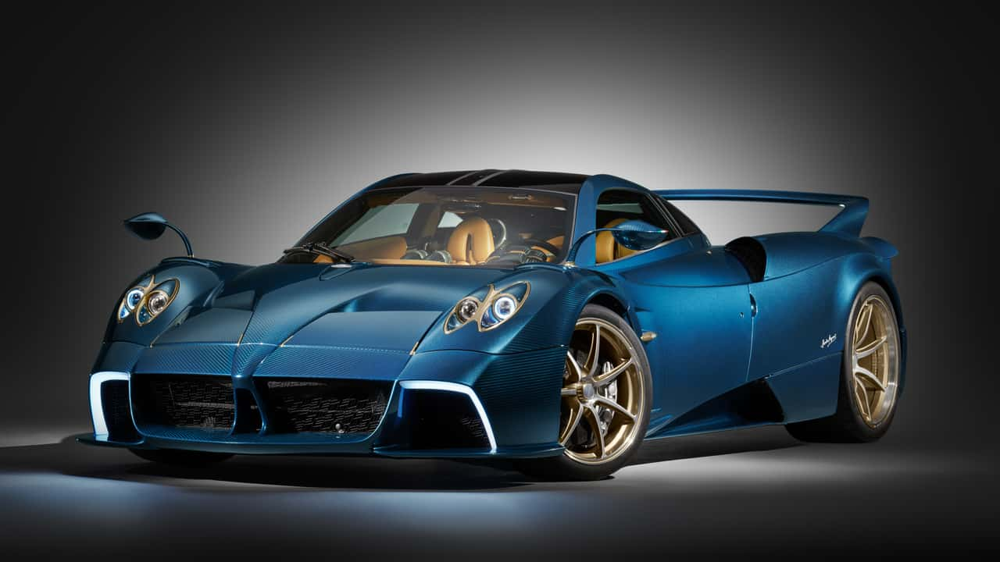
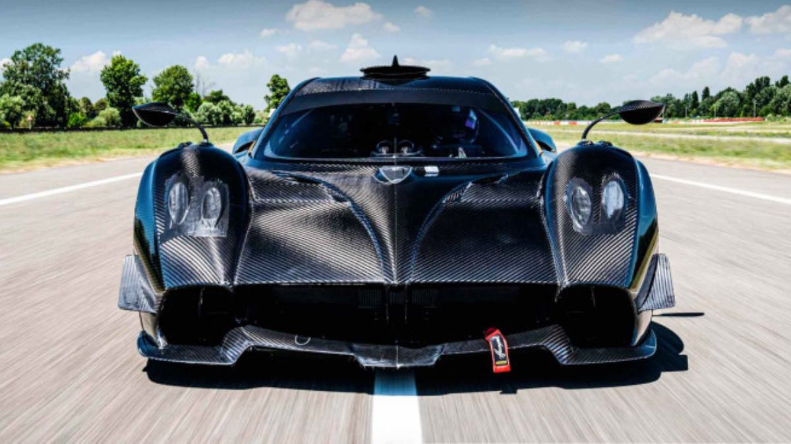
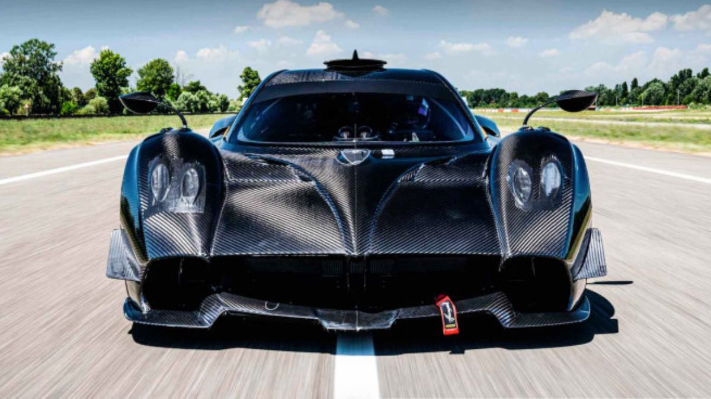

Pagani Huayra, 2011 yılında tanıtılan ve Pagani Automobili'nin Zonda'dan sonraki ikinci modeli olan yüksek performanslı
bir süper otomobildir. İsmine,
İnka rüzgar tanrısı "Huayra-tata" ilham olmuştur.
İşte Huayra'nın dikkat çekici tüm özellikleri:
Motor ve Performans
Motor
Mercedes-AMG tarafından geliştirilen 6.0 litrelik çift turbo V12 motor.
Güç:
720 beygir gücü (Huayra BC versiyonunda 800 beygir ve üzeri).
Tork:
1.000 Nm.
Hızlanma:
0-100 km/s hızlanma 3 saniyeden kısa.
Maksimum hız:
370 km/s .
Şasi ve Gövde
Malzeme:
Karbon-titanyum malzemeden üretilmiş şasi, son derece hafif ve sağlamdır.
Ağırlık:
Yaklaşık 1.218 kg.
Aerodinamik:
Aktif aerodinamik kanatlar ile hava akışı sürekli optimize edilir. Bu, yüksek hızlarda bile dengeyi artırır.
Tasarım
Kapılar
"Gullwing" tarzı yukarı açılan kapılar.
Aerodinamik detaylar:
Her bir panel, hava direncini azaltmak ve performansı artırmak için tasarlanmıştır.
İç tasarım:
Tamamen el işçiliğiyle üretilmiş deri ve karbon fiber kaplamalar. Lüks ve spor tasarımın
mükemmel bir birleşimidir.
Kişiselleştirme:
Pagani, müşterilere tasarımda geniş bir kişiselleştirme imkanı sunar.
Teknoloji
Şanzıman:
7 ileri sıralı otomatik manuel şanzıman (daha hızlı vites değişimi için hafifletilmiş mekanizma).
Elektronik Sistemler:
Aktif süspansiyon, aerodinamik kanatçıklar ve ABS fren sistemi ile donatılmıştır.
Lastikler:
Pirelli tarafından özel olarak tasarlanmış yüksek performans lastikleri.
Fiyat ve Üretim
Fiyat:
Başlangıç fiyatı 2 milyon dolar civarında (kişiselleştirme ile artabilir).
Üretim Adedi:
Her model sınırlı sayıda üretilir. Örneğin, standart Huayra 100 adetle sınırlandırılmıştır.
 
